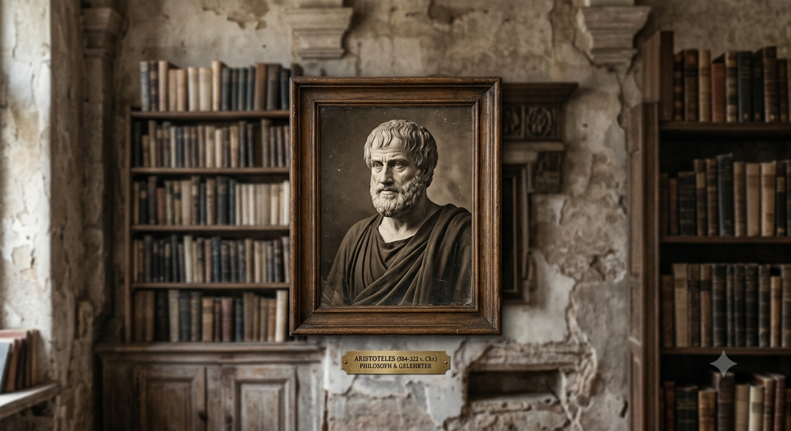

✦ Empedokles · Aristoteles · Galen ✦
Die Lehre
Von den vier Wurzelkräften zur Speisenlehre
✦ Historia Doctrinae ✦
Die vier Wurzelkräfte
Von Empedokles' sizilianischen Wurzelkräften über Aristoteles' Qualitäten formte Galen
das System der vier Temperamente — und schrieb mit De Alimentorum Facultatibus
zugleich das erste große Buch über die Kräfte der Speisen. Über die arabische Medizin —
Ibn Sīnās Kanon wurde ihr Jahrtausendbuch — wanderte die Lehre als Unani-Tibb
(„ionische Heilkunde") nach Persien und Indien, wo sie sich mit der ayurvedischen Dosha-Lehre
verband und bis heute gelebte Alltagspraxis ist. In Europa war die Zuordnung von Lebensmitteln
zu Temperament und Qualität — heiß, kalt, feucht, trocken, in vier Graden — vom
Regimen Sanitatis Salernitanum bis zum Tacuinum Sanitatis das gesamte
Mittelalter hindurch gängige ärztliche Praxis. Erst die moderne Medizin löste das System ab —
als Kulturgeschichte aber lebt es fort, und auf dieser Seite als Spiel mit einer
2500-jährigen sizilianischen Idee.
✦ Die drei Lehrer ✦
Von Akragas bis Pergamon

Empedokles von Akragas
ca. 494–434 v. Chr. · Agrigent, Sizilien
Philosoph, Arzt und Dichter aus dem heutigen Agrigent. Er lehrte als Erster die vier Wurzelkräfte (rhizómata) — Feuer, Wasser, Luft, Erde — vereint und getrennt durch Liebe und Streit. Der Legende nach endete er im Krater des Ätna: zurück ins Element.

Aristoteles
384–322 v. Chr. · Stagira & Athen
Er übernahm die Elemente des Empedokles und gab jedem ein Qualitätenpaar: Feuer heiß & trocken, Luft heiß & feucht, Wasser kalt & feucht, Erde kalt & trocken. Auf diesem Fundament errichtete die hippokratische Schule die Lehre der vier Körpersäfte.

Galen von Pergamon
129 – ca. 216 n. Chr. · Pergamon & Rom
Leibarzt der Kaiser und Vollender der Säftelehre: In De Temperamentis systematisierte er die vier Temperamente und in De Alimentorum Facultatibus die Kräfte der Nahrungsmittel — heiß, kalt, feucht, trocken, in Graden gestuft. Sein Grundsatz contraria contrariis curantur — Gegensätzliches gleicht Gegensätzliches aus — leitete 1500 Jahre lang jede Küche und Apotheke Europas.
⚕ Wichtiger Hinweis
Die Zuordnung von Lebensmitteln zu Temperamenten hat auf dieser Seite rein
historischen und unterhaltenden Charakter. Sie ist keine medizinische
Beratung, Diagnose oder Ernährungsempfehlung und entspricht nicht dem heutigen Stand
der Wissenschaft. Bei gesundheitlichen Fragen wende Dich bitte an Arzt oder Ärztin.

✦Bild — Foto folgt